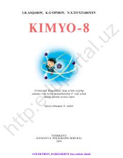

8K8-sinf o‘quvchilari uchun mo‘ljallangan kimyo fani bo‘yicha rasmiy darslik.
Ushbu darslik O‘zbekiston Respublikasi umumiy o‘rta ta’lim maktablarining 8-sinf o‘quvchilari uchun mo‘ljallangan kimyo fani bo‘yicha asosiy o‘quv qo‘llanmadir. Kitobda davriy qonun, kimyoviy elementlar, bog‘lanishlar, azot, oltingugurt va galogenlar kabi mavzular nazariy va amaliy mashqlar bilan yoritilgan.